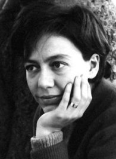
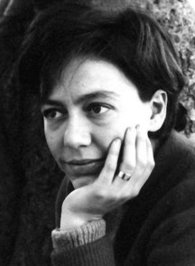

Biografía
Alejandra Pizarnik fue una destacada poetisa y escritora argentina nacida el 29 de abril de 1936 en Avellaneda, Buenos Aires, y fallecida el 25 de septiembre de 1972 en Buenos Aires. Pizarnik se destacó por su obra poética intensa y lírica, que exploró temas como la identidad, la soledad, la muerte y la búsqueda de significado en la existencia.
Durante su vida, Pizarnik estudió filosofía y literatura en la Universidad de Buenos Aires y desarrolló una carrera literaria que abarcó la poesía, la crítica literaria y la traducción. Su obra poética, influenciada por corrientes como el surrealismo, se caracteriza por su estilo introspectivo y simbólico.
Entre sus obras más conocidas se encuentran "La tierra más ajena" (1955), "La última inocencia" (1956), "Árbol de Diana" (1962) y "Extracción de la piedra de la locura" (1968). A lo largo de su carrera, Pizarnik luchó con problemas de salud mental y experimentó períodos de depresión. Trágicamente, se quitó la vida a la edad de 36 años, dejando un legado literario significativo en la poesía contemporánea argentina. Su obra sigue siendo estudiada y apreciada por su profundidad emocional y su contribución a la poesía en lengua española.
Bibliografía
- La tierra más ajena (1955)
- La última inocencia (1956)
- Las aventuras perdidas (1958)
- Árbol de Diana (1962)
- Los trabajos y las noches (1965)
- Extracción de la piedra de la locura (1968)
- Textos de sombra y últimos poemas (1962-1972, publicado póstumamente en 1982)
- Prosa completa (1996, recopilación de su prosa)
- Diarios (2003, recopilación de sus diarios íntimos)
- Cartas (2003, correspondencia epistolar con sus amigos y colegas)
Citas
“Qué fácil callar, ser serena y objetiva con los seres que no me interesan verdaderamente, a cuyo amor o amistad no aspiro. Soy entonces calma, cautelosa, perfecta dueña de mí misma. Pero con los poquísimos seres que me interesan… Allí está la cuestión absurda: soy una convulsión, un grito, sangre aullando.”— Alejandra Pizarnik
“Sensación de estar perdiendo mucha sangre por alguna herida que no ubico.”— Alejandra Pizarnik
“Estoy ebria de soledad, de espera, de deseos abstractos, de entidades llenas de designios mágicos. ¡Qué noche para morir! ¡Qué instante para hacer el amor!”— Alejandra Pizarnik
Fotos
 
